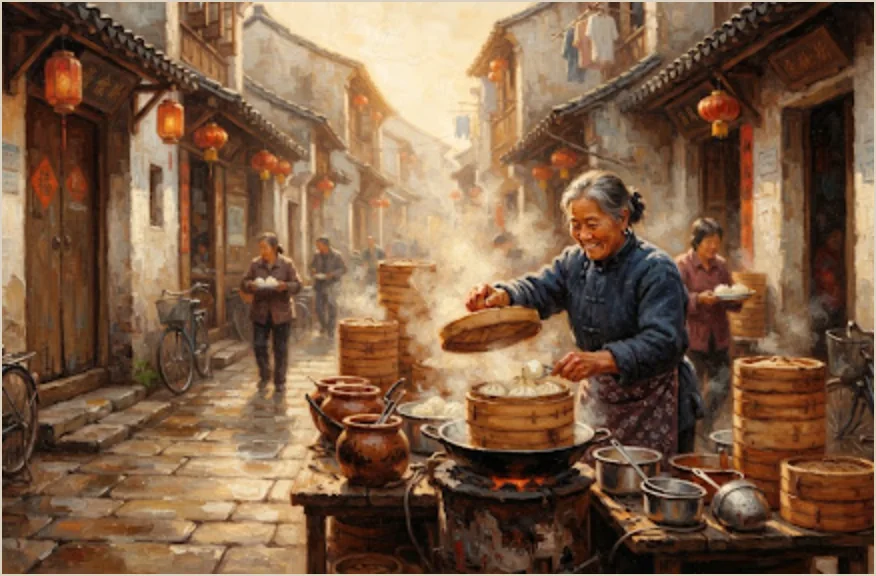

《汉书·食货志》云：“食谓农殖嘉谷可食之物，货谓布帛可衣，及金刀龟贝，所以济神用、给市井也。”食货二事，万民生道，莫重于此。
煙火人間 · 浮生十二食辰志
从晨曦石磨微响，至深巷晚炉残红十二时序万民饮食水火交战尽得真味凡天地运行一昼一夜之间，市肆炊烟因时而聚散。
今按《宋史·食货志》考据薪炭粟麦之行，证诸《东京梦华录》街衢早夜二市，参以今世市井蒸炒煨润，重成是志。
“东家汲井晓烟微，万笼翻云麦气肥。客倚市门候热餤，不知晨露湿征衣。”
“每日交五更，诸寺院发更点，鼓声毕，判院巡检打板响，诸门早市便开……唯诸门皆有早市，卖点心生葱、炊饼灌浆者，万民集于街衢。”
渾天星儀 · 歲時天象與萬民食候
宋代沈括《梦溪笔谈·象数》尝论璇玑浑仪之法：天道左旋三百六十五度有奇，而地道右迁十二辰以应水火。天不妄覆，地不妄载，万民一日三餐，皆与星宿律吕暗合。
※ 北极天枢为中枢 · 二十八宿环列周天 · 黄道食时日夜周流
辰时食候 · 晨炊百味
日出三竿，市肆毕陈。木蒸千层激越翻滚，老面初醒，生铁焦底香溢长街，万家灯火转为万民果腹之机。
“至辰时，潘楼街及州桥两头，早市大盛。有卖白肠、鲊脯、洗面筋、假野狐肉、灌浆馒头、水饭、生煎者，四方买卖聚集，香闻数里。”
今之江南晨市，厚铸生铁镬内百只生煎滋滋作响。一把青葱、一把焦芝麻，掀盖刹那白气蒸腾，千年食候一脉相承。
市井物候 · 宋刻善本與當代生香並列對勘
昔日汴京州桥潘楼之早夜二市，与今日街巷弄堂之镬气残灯，相隔千载而烟火如一。左列宋版古籍记述，右列今世生民滋味，具录于下。
【辰时晨炊】三屉白雾与生铁焦底
“每日交五更，天下市井未旦，唯诸门皆有早市。潘楼街卖点心、灌浆馒头、洗面筋、生煎餤子。万笼翻雾，炊烟连云，四方买卖早行之人聚饮于此，香闻数里。”
“生煎馄饨，下以麻油焦之，脆而不老，此第一快味。晨起得此，肺腑熨帖，一日精神充盈。”

东方破晓，厚铁大镬之内百只生煎泛着金黄焦底。竹盖轻启，滚热蒸汽与葱香、芝麻香瞬间溢满整条长弄。客倚铺门，呵气取食，千年人间晨饮之暖，莫过于此。
【午时镬气】十秒颠炒与鼎镬见苍生
长勺与重铁镬在千度烈焰间腾挪跳跃。油脂与高温剧烈交锋，烟气冲顶而香留盘底。十秒颠炒，全凭掌勺人数十年腕力与神会，市井百姓一日之筋力饱暖尽赖于此。
“南渡杭城，中食之肆如市，谓之分茶。凡点炒菜肴，须得炽炭烈火，厨役当炉持铁杓，烟起投料，十息之内急翻而成。客坐才定，百盘齐列，香浮梁栋。”
“炒鸡蕈、炒生鸡、爆肉片，火炽杓翻，谓之快炒。市井百官交赴，日中至脯，欢呼之声震动市楼。”
【暮夜二咏】瓦钵慢煨与残灯一碗清汤
今世暮色四合之时，街角深巷老砂钵文火咕嘟慢沸。游子卸下一身风尘泥泞，围坐小桌饮一碗热汤，骨骼筋脉顿觉温润舒展。
深夜弄堂昏黄灯球下，老翁手推木车慢滚沸汤。薄皮云吞飞入铜锅，清鲜入脾，乃给城市夜归人最坚实柔韧的世情托举。
治世食貨 · 五行水火市井脈絡考
考正史《汉书》《宋史·食货志》，“食”为八政之首。凡天下炊烟一昼夜不绝者，皆赖漕运谷粟、山林薪炭、江河甘泉、井盐百味相维相系。
漕渠通流，万灶乃沸
《宋史·食货志上》：“汴水横贯都城，岁漕江淮米六百万石，以充京师市肆。”百肆晨炊之老面馒头、生煎餤饼，皆自万艘漕舟溯流而来。
深山伐木，百镬争腾
《东京梦华录》卷二：“汴京数百万家，尽仰石炭，无一家燃薪者。”千度颠炒与瓦钵慢煨，全凭坚实石炭与乌冈柴炭，火候定而五味生。
甘井晨汲，点茶和羹
《梦粱录》卷十三：“杭城甜水井有数，日夕挑担买卖，不绝于道。”凡煮茶、滚面、磨浆、煨汤，水为味之母，水善利万物而不争。
解州产盐，调伏百鲜
《管子·地数》：“一女必有一针一刀，若其事立；食盐百疾不生。”大豆作酱，海池晒盐，五味相济而不过偏，此治大国若烹小鲜之本。
《食货志》与市井烟火物候流转总谱
| 食货脉络 | 宋代食宪考述（《食货志》） | 市井物候景象（《东京梦华录》） | 今世烟火映射（街巷实存） |
|---|---|---|---|
| 晨市面酵 | 麦粟广积官仓，开封平准坊日出面粉千石 | 州桥潘楼卖水饭、灌浆生煎、蒸饼馒头 | 老面发酵铁铸大镬，金黄生煎与清豆浆 |
| 正午快炒 | 官营石炭场广输京城，猛火百锻见筋力 | 分茶酒肆快杓炒鸡、爆鲜脯，十息全气 | 饭肆千度铁锅颠炒，十秒出锅镬气冲顶 |
| 日暮慢煨 | 陶瓷窑口广出粗陶砂钵，微火封泥养气 | 黄昏泥灶微红，瓦钵慢炖，香溢篱门 | 老弄堂砂锅浓汤，热酒温杯抚慰暮色疲劳 |
| 深宵残灯 | 夜市开禁，宋太祖弛更夜之防，市肆达旦 | 挑担挑汤面穿行街衢，残灯一碗暖过三更 | 深夜路边小推车，滚水云吞清汤暖人脏腑 |
宋槧《浮生十二食辰記》卷末長跋
四时递嬗，日居月诸。自寅旦至丑夜，十二食辰周流不息。盘餐有尽，而人世欢喜无涯。夫人居天地之间，所汲汲者衣食也。《食货志》述治道之本，莫先于粟麦水火；《梦华录》书万民之欢，全系于晨炊夜肆。古之君子观象玩占，以调四时；今之市井黎庶，候汤量火，以安平生。
是录也，不录侯服玉食之侈，唯纪薪炭麦浆之微。愿览卷之人，晨得温汤以润燥，午得鼎镬以壮力，暮得炉火以御寒，深宵得残灯一碗以慰征鞍。于百千滋味之中，体认平生安顿，则此椠不为虚设矣。
題記 食貨
對勘 長安
文体说明：本册以宋人食货笔记为拟古创作，引文为文学化改写，非严格史料原文；图版为设计稿生成图像，仅作版式演绎。